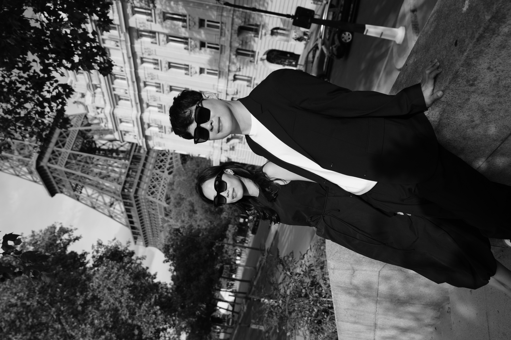
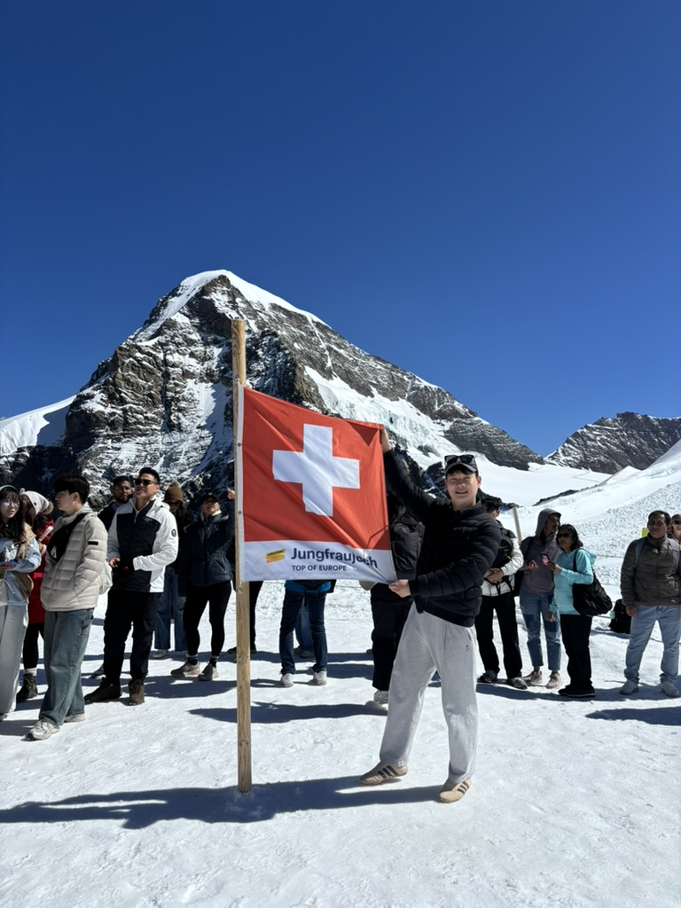

다녀온 곳들의 기록. 만년설, 골목, 야시장, 그리고 낯선 언어들. 사진과 함께 쌓아가는 여행의 모든 순간.
✦ All Trips

에펠탑 아래, 센 강 다리 위, 파리 루프탑에서. 우리가 가장 아름다웠던 순간들을 파리의 골목과 다리 위에 남겼다.

해발 3,454m 유럽의 정상부터 에메랄드빛 브리엔츠 호수, 알프스 산악 마을까지. 만년설과 파란 하늘이 공존하는 스위스.
다음 여행 기록이 추가됩니다